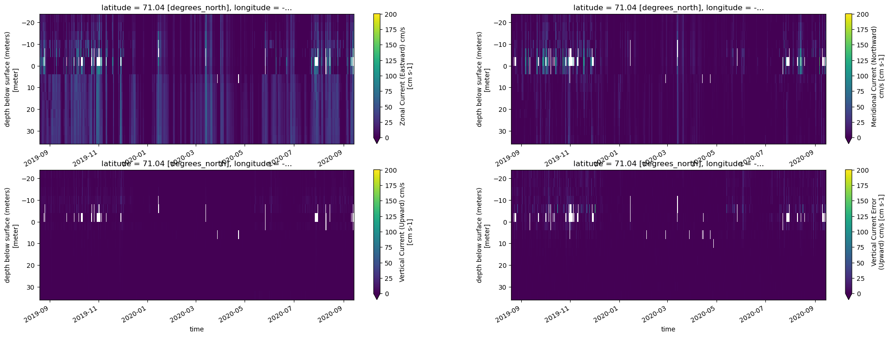
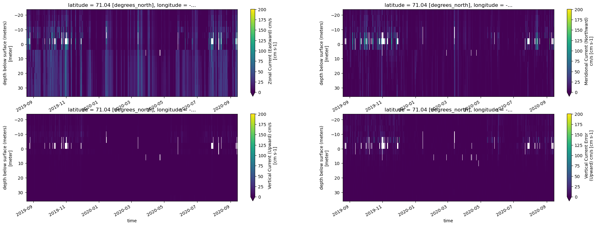
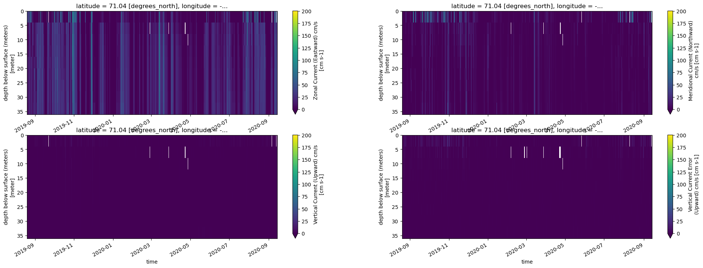
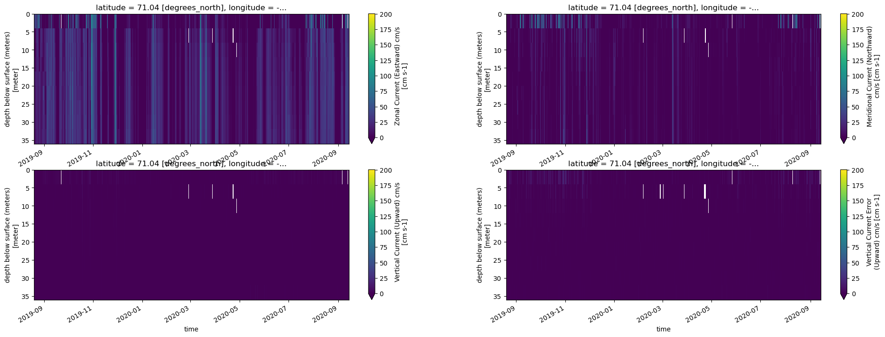
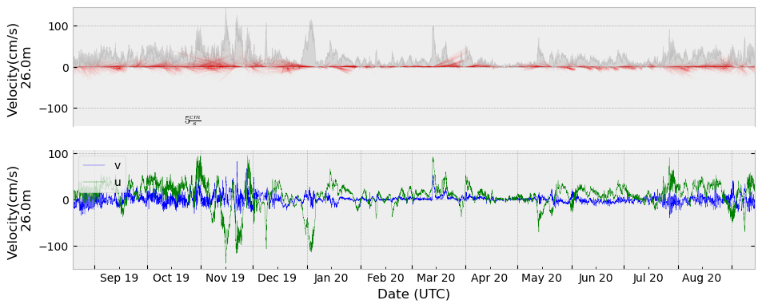
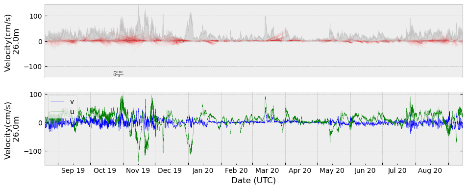

EcoFOCIpy ADCP QC - 20BSP-8A¶
mostly remove >100 cm/s flows in u/v
import xarray as xa
import numpy as np
import matplotlib.pyplot as plt
xdf = xa.load_dataset('19ckp4a_velein_0040m.nc')
xdf =xdf.where(xdf.u_curr_comp <=100,np.nan)
xdf
<xarray.Dataset>
Dimensions: (latitude: 1, longitude: 1, time: 9400, depth: 15)
Coordinates:
* time (time) datetime64[ns] 2019-08-19T11:00:00 ... 2020-09-14...
* depth (depth) float64 -22.0 -18.0 -14.0 -10.0 ... 26.0 30.0 34.0
* latitude (latitude) float64 71.04
* longitude (longitude) float64 -160.5
Data variables:
u_curr_comp (latitude, longitude, time, depth) float64 nan ... -10.96
v_curr_comp (latitude, longitude, time, depth) float64 nan ... -2.642
w_curr_comp (latitude, longitude, time, depth) float64 nan nan ... 5.4
w_curr_comp_err (latitude, longitude, time, depth) float64 nan nan ... -1.8
agc1 (latitude, longitude, time, depth) float64 nan nan ... 83.0
agc2 (latitude, longitude, time, depth) float64 nan nan ... 71.0
agc3 (latitude, longitude, time, depth) float64 nan nan ... 81.0
agc4 (latitude, longitude, time, depth) float64 nan nan ... 76.0
Attributes: (12/13)
Latitude_DegMMddW: 71 2.591 N
Longitude_DegMMddN: 160 29.706 W
MooringID: 19CKP-4A
platform_deployment_date: 2019-08-19T10:25:27Z
platform_deployment_cruise_name: OS1901
platform_recovery_date: 2020-09-14T02:17:00Z
... ...
platform_deployment_recovery_comments: Swapped ADCP with CK12A (orig 550...
WaterDepth: 52.5
date_created: 2022-12-01T13:52:48Z
date_modified:
QC_indicator: unknown
history: Trimmed to deployment.# xdf['history'] = xdf.history + 'QC of high u/v values'
#optional plotting
fig, axes = plt.subplots(ncols=2, nrows=2, figsize=(24,8))
try:
xdf['agc1'].T.plot(ax=axes[0,0], yincrease=False)
xdf['agc2'].T.plot(ax=axes[0,1], yincrease=False)
xdf['agc3'].T.plot(ax=axes[1,0], yincrease=False)
xdf['agc4'].T.plot(ax=axes[1,1], yincrease=False)
except:
pass
fig, axes = plt.subplots(ncols=2, nrows=2, figsize=(24,8))
try:
xdf['u_curr_comp'].T.plot(ax=axes[0,0],vmin=0, vmax=200, yincrease=False)
xdf['v_curr_comp'].T.plot(ax=axes[0,1],vmin=0, vmax=200, yincrease=False)
xdf['w_curr_comp'].T.plot(ax=axes[1,0],vmin=0, vmax=200, yincrease=False)
xdf['w_curr_comp_err'].T.plot(ax=axes[1,1],vmin=0, vmax=200, yincrease=False)
except:
pass
 

xdf.attrs['history'] = xdf.attrs['history']+' removed U,V >100cm/s'
Trim above surface (negative values)¶
ixdf = xdf.where(xdf.depth >=-0.).dropna(how='all',dim='depth')
ixdf.attrs['history'] = ixdf.attrs['history']+' trimmed above surface'
ixdf.to_netcdf('19ckp4a_velein_0040m.trimmed.nc')
xdf = xa.load_dataset('19ckp4a_velein_0040m.trimmed.nc')
ixdf = xdf.interpolate_na(dim='time',max_gap='2H')
ixdf.attrs['history'] = ixdf.attrs['history']+' linearly interpolated 1hour gaps'
Interpolate over singleton missing gaps linearly¶
fig, axes = plt.subplots(ncols=2, nrows=2, figsize=(24,8))
try:
ixdf['agc1'].T.plot(ax=axes[0,0], yincrease=False)
ixdf['agc2'].T.plot(ax=axes[0,1], yincrease=False)
ixdf['agc3'].T.plot(ax=axes[1,0], yincrease=False)
ixdf['agc4'].T.plot(ax=axes[1,1], yincrease=False)
except:
pass
fig, axes = plt.subplots(ncols=2, nrows=2, figsize=(24,8))
try:
ixdf['u_curr_comp'].T.plot(ax=axes[0,0],vmin=0, vmax=200, yincrease=False)
ixdf['v_curr_comp'].T.plot(ax=axes[0,1],vmin=0, vmax=200, yincrease=False)
ixdf['w_curr_comp'].T.plot(ax=axes[1,0],vmin=0, vmax=200, yincrease=False)
ixdf['w_curr_comp_err'].T.plot(ax=axes[1,1],vmin=0, vmax=200, yincrease=False)
except:
pass
 

ixdf.to_netcdf('19ckp4a_velein_0040m.filtered.nc')
%matplotlib inline
import matplotlib as mpl
import matplotlib.pyplot as plt
import cmocean
print(cmocean.cm.cmapnames)
from matplotlib.dates import (
YearLocator,
WeekdayLocator,
MonthLocator,
DayLocator,
HourLocator,
DateFormatter,
)
import matplotlib.ticker as ticker
class Timeseries1dStickPlot(object):
mpl.rcParams['svg.fonttype'] = 'none'
mpl.rcParams['ps.fonttype'] = 42
mpl.rcParams['pdf.fonttype'] = 42
def __init__(self, fontsize=10, labelsize=10, plotstyle='k-.', stylesheet='bmh'):
"""Initialize the timeseries with items that do not change.
This sets up the axes and station locations. The `fontsize` and `spacing`
are also specified here to ensure that they are consistent between individual
station elements.
Parameters
----------
fontsize : int
The fontsize to use for drawing text
labelsize : int
The fontsize to use for labels
stylesheet : str
Choose a mpl stylesheet [u'seaborn-darkgrid',
u'seaborn-notebook', u'classic', u'seaborn-ticks',
u'grayscale', u'bmh', u'seaborn-talk', u'dark_background',
u'ggplot', u'fivethirtyeight', u'seaborn-colorblind',
u'seaborn-deep', u'seaborn-whitegrid', u'seaborn-bright',
u'seaborn-poster', u'seaborn-muted', u'seaborn-paper',
u'seaborn-white', u'seaborn-pastel', u'seaborn-dark',
u'seaborn-dark-palette']
"""
self.fontsize = fontsize
self.labelsize = labelsize
self.plotstyle = plotstyle
plt.style.use(stylesheet)
@staticmethod
def add_title(mooringid='',lat=-99.9,lon=-99.9,depth=9999,instrument=''):
"""Pass parameters to annotate the title of the plot
This sets the standard plot title using common meta information from PMEL/EPIC style netcdf files
Parameters
----------
mooringid : str
Mooring Identifier
lat : float
The latitude of the mooring
lon : float
The longitude of the mooring
depth : int
Nominal depth of the instrument
instrument : str
Name/identifier of the instrument plotted
"""
ptitle = ("Plotted on: {time:%Y/%m/%d %H:%M} \n from {mooringid} Lat: {latitude:3.3f} Lon: {longitude:3.3f}"
" Depth: {depth}\n : {instrument}").format(
time=datetime.datetime.now(),
mooringid=mooringid,
latitude=lat,
longitude=lon,
depth=depth,
instrument=instrument )
return ptitle
def plot(self, timedata=None, udata=None, vdata=None, ylabel="Velocity (cm/s)", linescale=1, **kwargs):
if kwargs['rotate'] != 0.0:
#when rotating vectors - positive(+) rotation is equal to cw of the axis (ccw of vector)
# - negative(+) rotation is equal to ccw of the axis (cw of the vector)
print("rotating vectors")
angle_offset_rad = np.deg2rad(kwargs['rotate'])
udata = udata*np.cos(angle_offset_rad) + vdata*np.sin(angle_offset_rad)
vdata = -1.*udata*np.sin(angle_offset_rad) + vdata*np.cos(angle_offset_rad)
magnitude = np.sqrt(udata**2 + vdata**2)
fig, (ax1,ax2) = plt.subplots(2,1,sharex='col',figsize=(11,4.25))
# Plot u and v components
# Plot quiver
ax1.set_ylim(-1*np.nanmax(magnitude), np.nanmax(magnitude))
fill1 = ax1.fill_between(timedata, magnitude, 0, color='k', alpha=0.1)
# Fake 'box' to be able to insert a legend for 'Magnitude'
"""
p = ax1.add_patch(plt.Rectangle((1,1),1,1,fc='k',alpha=0.1))
leg1 = ax1.legend([p], ["Current magnitude [cm/s]"],loc='lower right')
leg1._drawFrame=False
"""
# 1D Quiver plot
q = ax1.quiver(timedata,0,udata,vdata,color='r',units='y',scale_units='y',
scale = 1,headlength=1,headaxislength=1,width=0.04*linescale,alpha=.95)
qk = plt.quiverkey(q,0.2, 0.05, 5,r'$5 \frac{cm}{s}$',labelpos='W',
fontproperties={'weight': 'bold'})
# Plot u and v components
ax1.set_xticklabels(ax1.get_xticklabels(), visible=False)
ax2.set_xticklabels(ax2.get_xticklabels(), visible=True)
ax1.axes.get_xaxis().set_visible(False)
ax1.set_xlim(timedata.min(),timedata.max())
ax1.set_ylabel(ylabel)
ax2.plot(timedata, vdata, 'b-', linewidth=0.25)
ax2.plot(timedata, udata, 'g-', linewidth=0.25)
ax2.set_xlim(timedata.min(),timedata.max())
ax2.set_xlabel("Date (UTC)")
ax2.set_ylabel(ylabel)
ax2.xaxis.set_major_locator(MonthLocator())
ax2.xaxis.set_minor_locator(MonthLocator(bymonth=range(1,13), bymonthday=15))
ax2.xaxis.set_major_formatter(ticker.NullFormatter())
ax2.xaxis.set_minor_formatter(DateFormatter('%b %y'))
ax1.spines['bottom'].set_visible(False)
ax2.spines['top'].set_visible(False)
ax1.xaxis.set_ticks_position('top')
ax2.xaxis.set_ticks_position('bottom')
ax2.yaxis.set_ticks_position('both')
ax2.tick_params(axis='both', which='minor', labelsize=self.labelsize)
ax1.tick_params(axis='both', which='minor', labelsize=self.labelsize)
#manual time limit sets
#ax1.set_xlim([datetime.datetime(2016,2,1),datetime.datetime(2016,9,15)])
#ax2.set_xlim([datetime.datetime(2016,2,1),datetime.datetime(2016,9,15)])
# Set legend location - See: http://matplotlib.org/Volumes/WDC_internal/users/legend_guide.html#legend-location
leg2 = plt.legend(['v','u'],loc='upper left')
leg2._drawFrame=False
return plt, fig
['thermal', 'haline', 'solar', 'ice', 'gray', 'oxy', 'deep', 'dense', 'algae', 'matter', 'turbid', 'speed', 'amp', 'tempo', 'rain', 'phase', 'topo', 'balance', 'delta', 'curl', 'diff', 'tarn']
for i in range(0,len(ixdf),1):
try:
p1 = Timeseries1dStickPlot()
plt1, fig1 = p1.plot(timedata=ixdf.time,
udata=ixdf.isel(depth=1,latitude=0,longitude=0).u_curr_comp,
vdata=ixdf.isel(depth=1,latitude=0,longitude=0).v_curr_comp,
rotate=0,
ylabel = f'Velocity(cm/s) \n {ixdf.isel(depth=i).depth.values}m ')
except:
pass
/var/folders/vv/blq095kj0xj9nz1v0ffdwfch0000gp/T/ipykernel_21964/3213988334.py:119: UserWarning: FixedFormatter should only be used together with FixedLocator
ax2.set_xticklabels(ax2.get_xticklabels(), visible=True)
/var/folders/vv/blq095kj0xj9nz1v0ffdwfch0000gp/T/ipykernel_21964/3213988334.py:119: UserWarning: FixedFormatter should only be used together with FixedLocator
ax2.set_xticklabels(ax2.get_xticklabels(), visible=True)
/var/folders/vv/blq095kj0xj9nz1v0ffdwfch0000gp/T/ipykernel_21964/3213988334.py:119: UserWarning: FixedFormatter should only be used together with FixedLocator
ax2.set_xticklabels(ax2.get_xticklabels(), visible=True)
/var/folders/vv/blq095kj0xj9nz1v0ffdwfch0000gp/T/ipykernel_21964/3213988334.py:119: UserWarning: FixedFormatter should only be used together with FixedLocator
ax2.set_xticklabels(ax2.get_xticklabels(), visible=True)
/var/folders/vv/blq095kj0xj9nz1v0ffdwfch0000gp/T/ipykernel_21964/3213988334.py:119: UserWarning: FixedFormatter should only be used together with FixedLocator
ax2.set_xticklabels(ax2.get_xticklabels(), visible=True)
/var/folders/vv/blq095kj0xj9nz1v0ffdwfch0000gp/T/ipykernel_21964/3213988334.py:119: UserWarning: FixedFormatter should only be used together with FixedLocator
ax2.set_xticklabels(ax2.get_xticklabels(), visible=True)
/var/folders/vv/blq095kj0xj9nz1v0ffdwfch0000gp/T/ipykernel_21964/3213988334.py:119: UserWarning: FixedFormatter should only be used together with FixedLocator
ax2.set_xticklabels(ax2.get_xticklabels(), visible=True)
/var/folders/vv/blq095kj0xj9nz1v0ffdwfch0000gp/T/ipykernel_21964/3213988334.py:119: UserWarning: FixedFormatter should only be used together with FixedLocator
ax2.set_xticklabels(ax2.get_xticklabels(), visible=True)
 
